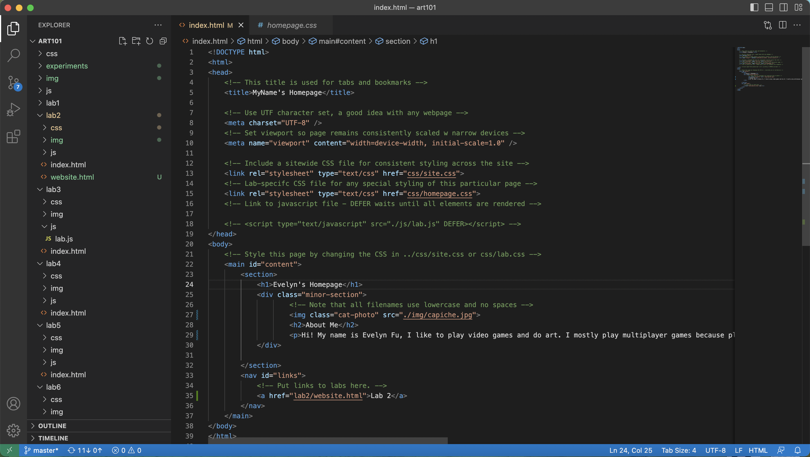
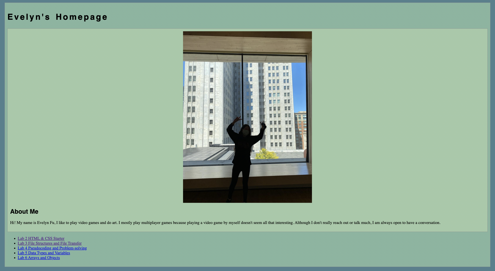
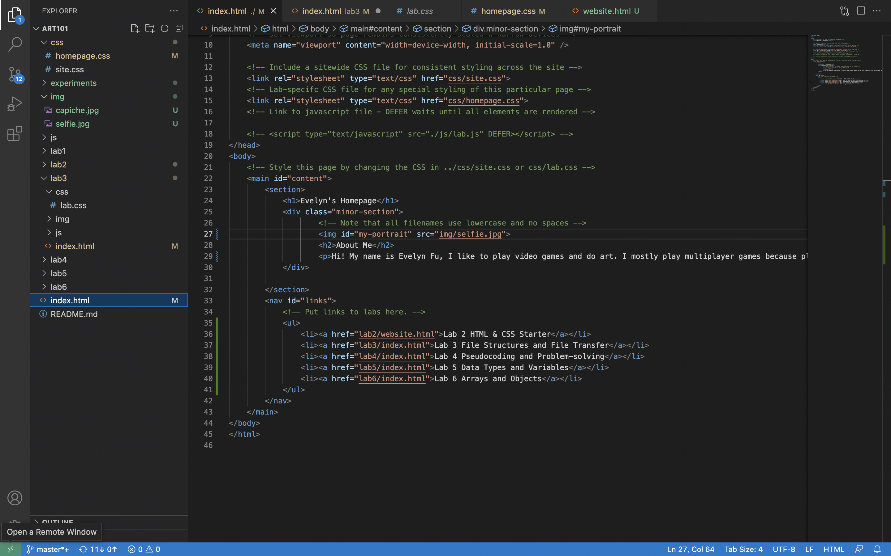

Lab 3 - File Structure and File Transfer
Challenge
The challenge of this lab is to create a local file structure on my computer and add index.html files.
Problems
I was trying to resize and center my image but it wasn't working, in the end I looked it up in chatGPT for what code to use to center the image in css instead of the index.html.
Reflection
This lab felt really long, and with minor errors making the code not work was frustrating. But with my partner I figured out what was wrong with my code, so fixing it was easier. We decided to change colors of the headings and paragraphs by looking up how to write the code for it.
Results

